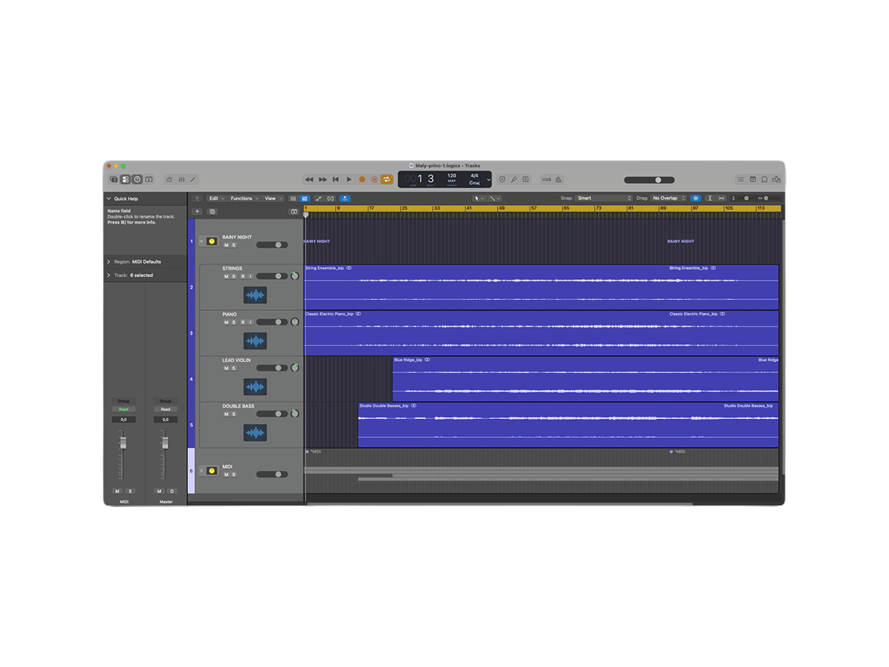
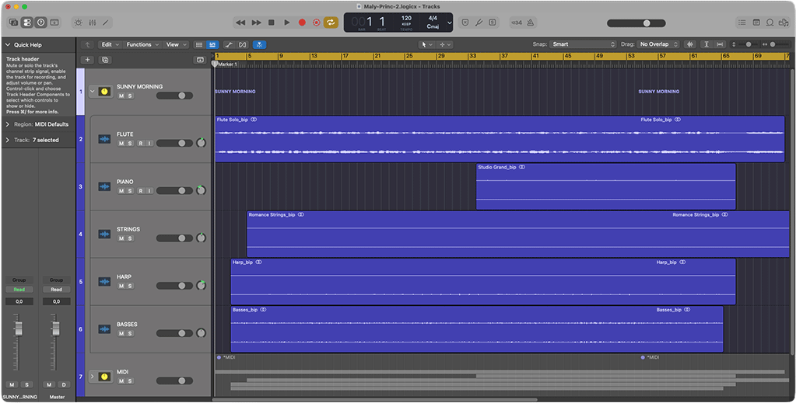
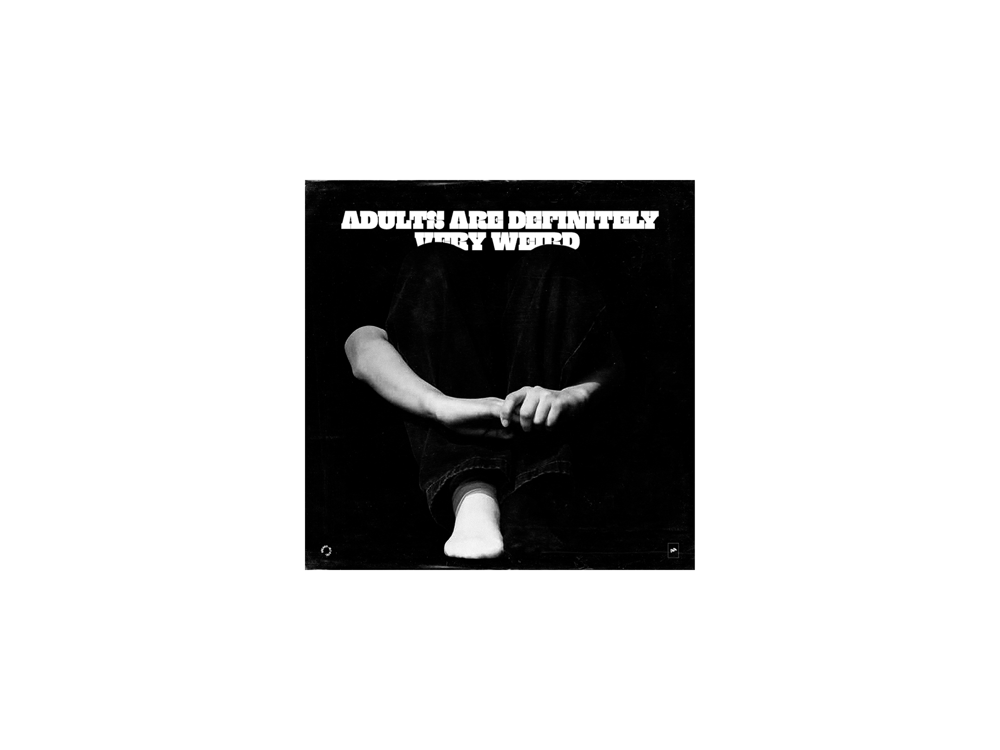
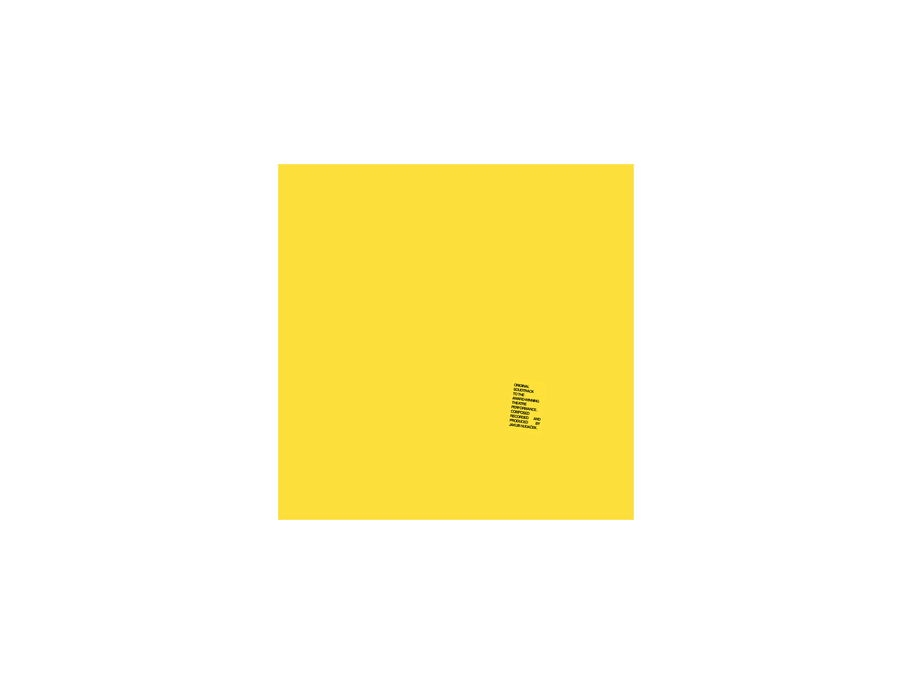

TWO ORIGINAL ORCHESTRAL COMPOSITIONS CREATED FOR
THE AWARD-WINNING STAGE PRODUCTION "ADULTS ARE DEFINITELY VERY WEIRD",
BUILT AROUND CONTRASTING MUSICAL ATMOSPHERES
OF DARKNESS, UNCERTAINTY, WARMTH AND CALM.




* HIGHLIGHTS
→ SCOPE & IMPACT
Composed two original orchestral pieces forming the production's entire musical and sound-design material
"Sunny Morning" is a lighter, flute-led composition featuring piano, strings, harp and basses
"Rainy Night" is a darker, cinematic composition featuring strings, piano, double bass and lead violin
Composed, arranged, recorded, engineered and produced both pieces independently in a home studio
Completed the composition and recording of both pieces within three days
Worked directly with the theatre director, with both compositions receiving positive audience responses
Production awarded second place at the regional round of Vajanského Martin